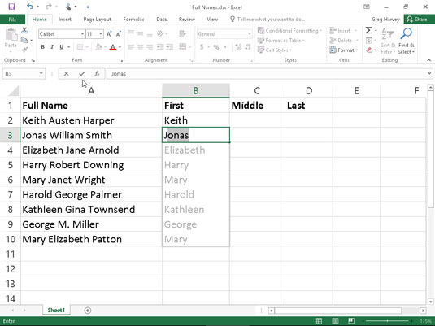

Programming systems
Not just for data science
Tomas Petricek, University of Kent
tomas@tomasp.net |
@tomaspetricek |
http://tomasp.net
Making programming better
Caricatures of conventional views
What is programming?
Producing code in a programming language!
How to improve it?
Write a research paper with a prototype!
What matters about it?
Safety, efficiency, usability!
Technical dimensions
(with Joel Jakubovic and Jonathan Edwards)
Programming Languages
Programming is writing code
Formal semantics, implementation, paradigms
We know how to study this!

Programming Systems
Interacting with stateful system
Visualizations, feedback, interaction
But how do we study this?

Language is
a small part
Together with editors, debuggers & other tools
Less interesting but overemphasized?
Technical dimensions
Science of programming systems
Academics & start-ups build interesting systems!
Disconnected and hard to compare
Can we find a common language?
Stand on the shoulders of giants?
Dimensions
Identify interesting characteristics
Cover "good old" and new systems alike
Allow qualitative comparison
Don't say what's good!
|
Interaction
Notation
Error Handling
|
Conceptual Structure:
Customizability
(Others)
|
Abstraction Construction
From Concrete
- Generalize from examples
- Expanding range in Excel
- Pygmalion system
From Abstract
- Define function first
- Most programming languages
- Coding done without values
Notational Uniformity

Post-modernist
- Variety of different notations
- More to learn, but better problem fit
- Perl language, Web platform
Modernist
- Small set of uniform primitives
- Not everything fits the notation
- Lisp and (partly) Smalltalk
Self-sustainability

Separate language level
- Implementation vs. user level
- Limited changeability from within
- Java and other languages
Integrated systems design
- Implemented & modifiable in itself
- Often changeable at runtime
- Smalltalk, Lisp Machines
Technical dimensions
Why and how to use them
Systems are more than languages
Trying to find a common language
New look at past programming systems?
Map for exploring new design ideas?
Data exploration
Querying data
Athletes by number of gold medals from Rio 2016
1: 2: 3: 4: 5: 6: |
|
Querying data
Language and data source features you need to know
Python dictionaries {"key": value}
Generalised indexers .[ condition ]
Operation names sort_values
Data column names "Athlete"
Notebooks
Financial Times waste analysis
Note the clever abstraction mechanism!

Notebooks
Financial Times waste analysis
Note the clever abstraction mechanism!
The Gamma
Programming through iterative prompting
Program just by using auto-complete!
Recognition over recall principle
Make correct and complete suggestions
Demo
Iterative prompting in The Gamma
The Gamma
Technical dimensions analysis
Uniformity of notation - everything is a member
Self-sustainability - all libraries external!
Conceptual structure - convenient at the top-level
Error detection and prevention using types
Histogram
Programs as sequences of interactions
Creating code equal to using user interface
Sequence of actions rather than expressions
Extract function as a first-class feature
Integrate programming and execution
Demo
Data exploration in Histogram
Histogram
Technical dimensions analysis
Notational structure - explicit structure editing
Abstraction construction - from concrete example
Modes of interaction - editing & running in one mode
Self-sustainability - libraries remain external
Complementary science


Complementary science
Doing history to contribute to contemporary science
Are there lost ideas worth recovering?
Works even better in programming!
Demo
Recovering Commodore 64 BASIC
Commodore 64
Technical dimensions analysis
Modes of interaction - editing & running in one mode
Learnability - use BASIC even to play games!
Sociability - code shareable in magazines
Conceptual convenience - high with escape hatches
Conclusions
Programming systems
Technical dimensions to think about systems
Iterative prompting for non-expert data exploration
Programming as interaction to design new systems!
Complementary science to get more ideas!
Tomas Petricek, University of Kent
tomas@tomasp.net |
@tomaspetricek |
http://tomasp.net